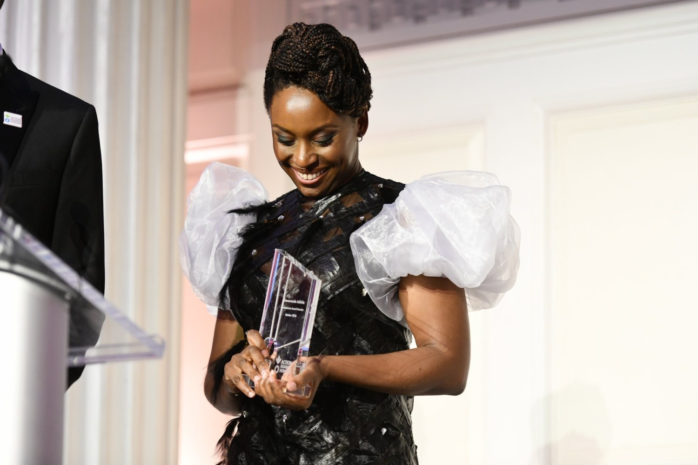

Chimamanda Ngozi Adichie

She is the author of several novels, including Purple Hibiscus (2003), Half of a Yellow Sun (2006), Americanah (2013), and Dream Count (2025), of a short story collection, The Thing around Your Neck (2009), and of three books of non-fiction, We Should All Be Feminists (2014), Dear Ijeawele, or A Feminist Manifesto in Fifteen Suggestions (2017), and Notes on Grief (2021).
- Born 15 September 1977.
- Writes about postcolonial feminist literature.
- Some works include:
- Half of a Yellow Sun
- The Thing Around Your Neck
- A Feminist Manifesto in Fifteen Suggestions
- Dream Count
- We Should All Be Feminists
- Americanah
Read more about Adichie's works and accolades on her wikipedia entry